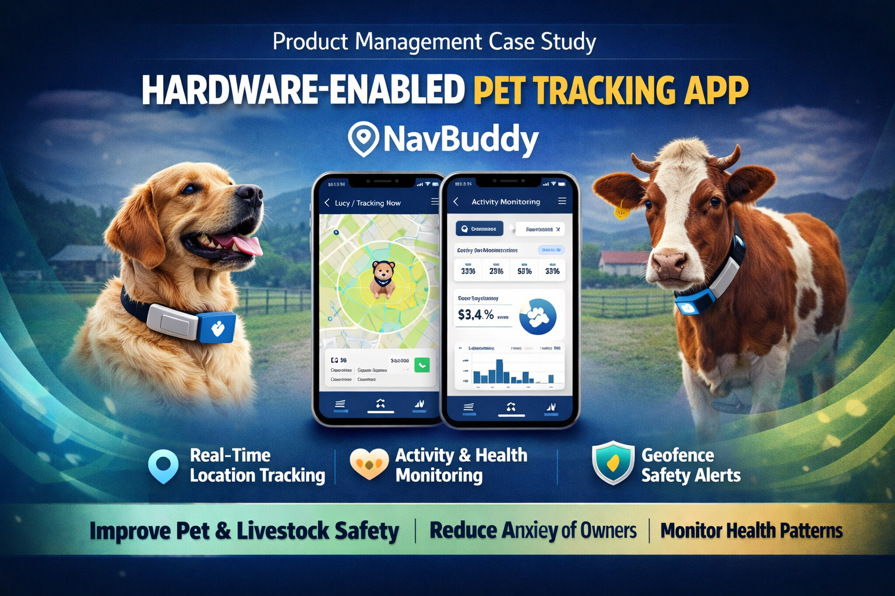

NavBuddy
Hardware Enabled Pet Tracking Device Paired With Mobile App

Peace of Mind for Pet Owners
NavBuddy is a hardware-enabled pet tracking solution designed to help pet owners and livestock owners monitor their animals in real time. In recent years, many pets and cattle are lost due to wandering, theft, or accidents, creating emotional and financial stress for owners.
NavBuddy combines a lightweight tracking device attached to the pet’s collar with a mobile application, enabling real-time location tracking, activity monitoring, geofencing alerts, and basic health insights. The solution helps users ensure safety and gain visibility into their pets’ daily movement patterns.
The Invisible Leash
Pet owners and cattlemen lacked a reliable way to track the real-time location, movement, and activity of their animals.
Who Was Affected
- Pet owners wanting to ensure safety
- Cattlemen managing wandering livestock
- Pet shop owners monitoring animals
Impact if Unsolved
- Difficulty locating lost animals
- Increased risk of theft or loss
- No visibility into health routines
Understanding the Users
Pet Owner
Primary UserGoals
- Track real-time pet location
- Monitor daily activity
- Ensure safety & prevent loss
Pain Points
- Locating missing pets
- No visibility into movement
Cattlemen
Secondary UserGoals
- Monitor cattle across large areas
- Track activity patterns
Pain Points
- Tracking across wide regions
- Limited health insights
Establishing Objectives
-
Enable reliable tracking of pets and livestock
-
Provide visibility into daily activity and movement
-
Improve safety and peace of mind for owners
- Active Usage Increase in DAU/MAU among pet and livestock owners.
- Recovery Time Reduction in time taken to locate and recover lost animals.
- Reliability Positive feedback on tracking accuracy and signal uptime.
Bridging Hardware and Software
NavBuddy was designed as a hardware-enabled tracking solution that combines a lightweight tracking device with a mobile application. The device continuously tracks the pet’s location and sends data to the mobile app, allowing owners to monitor movement and activity in real time.
Users can define safe zones using geofencing and receive alerts when pets move outside these boundaries. Activity monitoring and basic health insights provide additional visibility into pets’ routines, helping owners ensure safety and well-being.
Dedicated Hardware over Mobile-Only
Context
Mobile-only solutions relying on Bluetooth or proximity were not reliable enough for real-time tracking when pets wander alone.
Rationale
A dedicated GPS + GSM device enabled continuous monitoring independent of the owner's phone, providing true real-time geofencing and activity insights.
MVP vs. Future Roadmap
MVP Features
- Real-time pet location tracking
- Geofencing with boundary alerts
- Basic activity monitoring
Future Roadmap
- Advanced health monitoring
- Step count analytics (Steps/Calories)
- Two-way device calling
Reason for prioritization: Real-time location tracking addressed the most critical user problem — locating lost pets — and was prioritized to validate the core product value quickly.
The Collaborative Effort
The Team
Building a hardware-enabled product required close synchronization between embedded engineers and mobile developers.
Key Challenge
Managing dependencies between hardware board revisions and mobile application delivery was a major constraint.
Process: Shared sprint cycles and daily standups helped coordinate these complex dependencies.
Tools & Technologies
Measured Success
- Enabled real-time tracking of pets
- Improved monitoring of daily activity patterns
- Provided geofencing alerts for safety
Long-term Impact
- Reduced anxiety among pet owners globally
- Improved safety for both domestic pets and livestock
- Increased user confidence in IoT-enabled monitoring